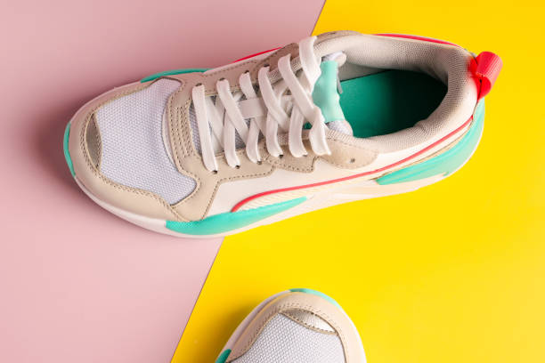
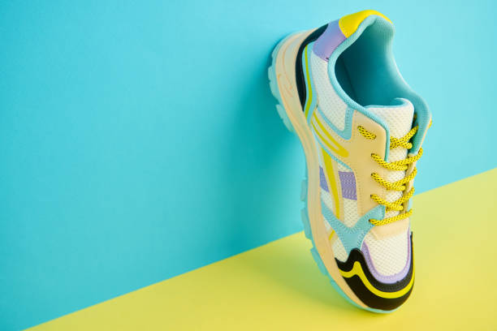
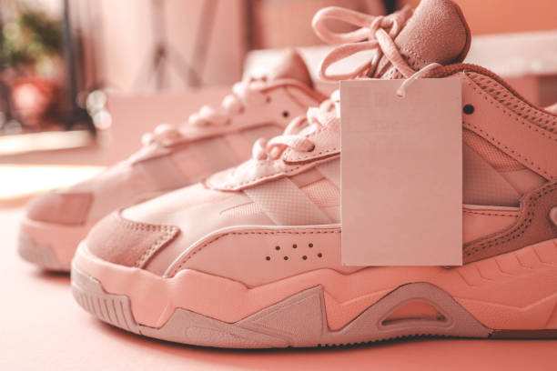
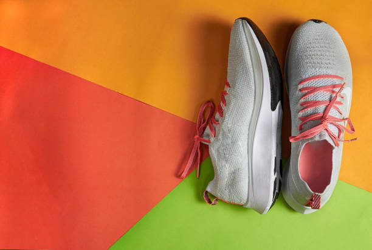
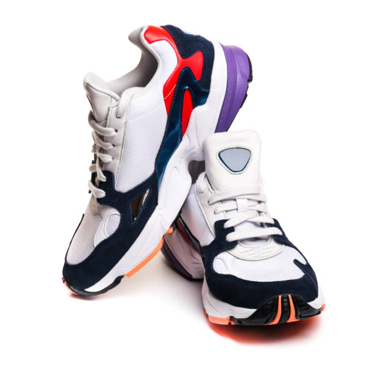

Shoes
Brand: Nike

Nike Sneakers
Price: $199
Shop the latest Nike running shoes and Nike originals at our Product mart. Trendy sneakers and sport shoes at great prices. Buy stylish Nike shoes online today!
Product Description
Made with recycled materials: The shoe incorporates at least 20% recycled materials by weight, aligning with sustainability considerations.
Retro design inspiration: This sneaker draws design cues from classic 1980s basketball shoes, featuring stitched overlays for an authentic look.
Pros: Many reviewers find the shoes comfortable and visually appealing with a stylish design
Cons: Some reviews mention the leather quality is poor and the shoes crease easily
Features
- Cushioning Technology: Nike Air units (visible in Air Max, concealed in others) provide lasting cushioning. ZoomX foam offers elite responsiveness and lightweight cushioning, often used in competitive running shoes.
- Upper Materials (Flyknit & Mesh): Nike Flyknit creates a lightweight, seamless, and breathable upper that fits like a sock. Engineered mesh is frequently used for ventilation and targeted support.
- Performance & Stability: Many models feature specialized outsoles with rubber compounds for high-traction surfaces. Stability shoes include medial guide rails to prevent excessive pronation.
- Design & Versatility: Known for combining fashion with function, they feature varied colorways and iconic designs suitable for both sports and casual wear.
Related Products



